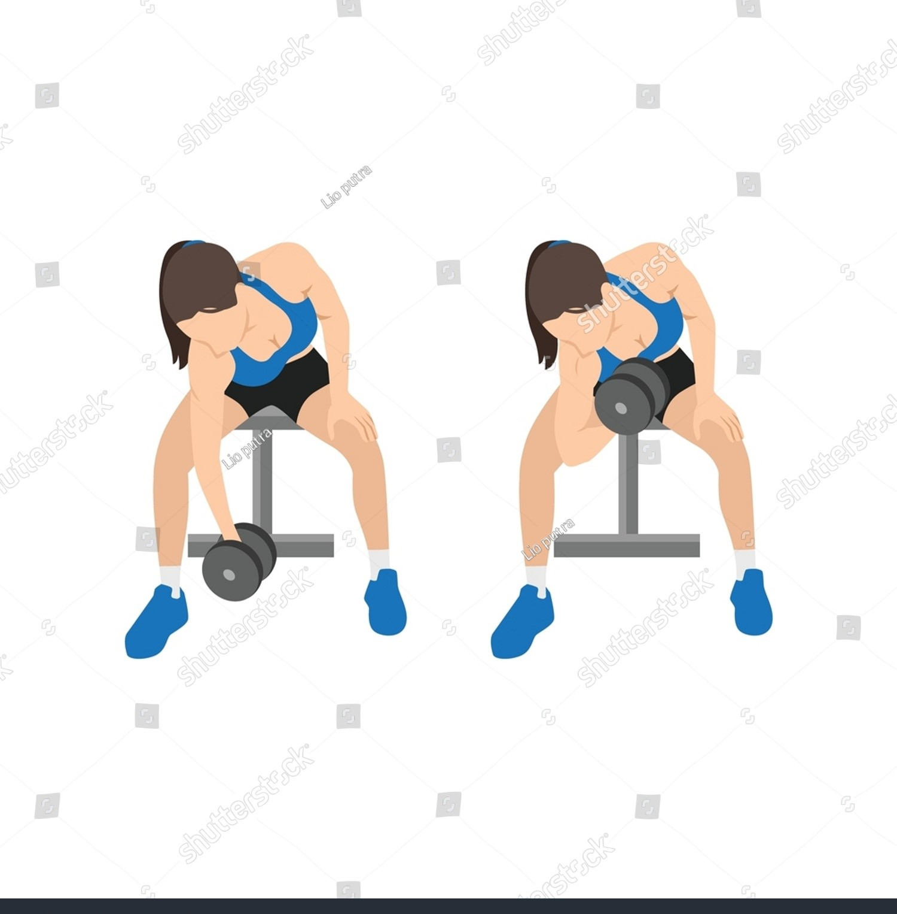

Exercise Description
Sit on a bench with your legs spread. Rest one arm on your inner thigh, holding a dumbbell. Curl the weight up towards your shoulder, then lower it slowly. After completing the set, immediately reduce the weight and continue curling until failure.
Reps and Sets
Beginners: 3 sets of 12-15 reps per hand
Weights: 10-15 kg dumbbell
Rest time between each set: 1min
Video Implementation